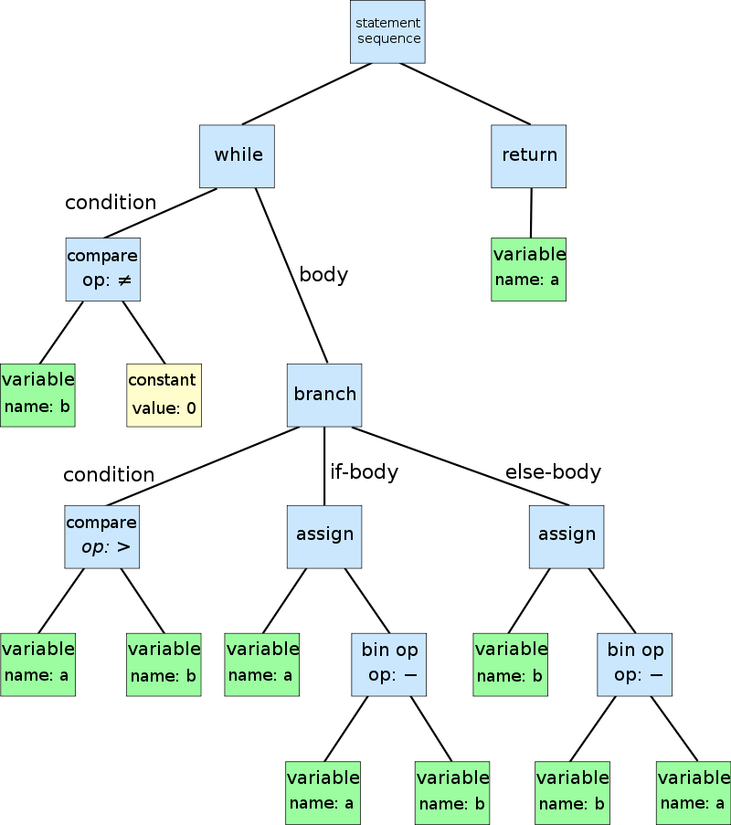
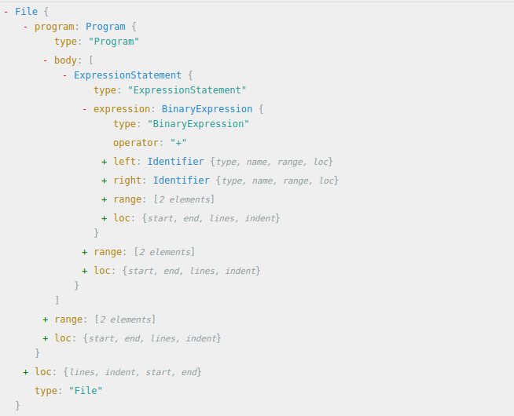

<!DOCTYPE html>
<html>

<head>
    <meta charset="utf-8" />
    <meta http-equiv="X-UA-Compatible" content="IE=edge" />

    <title>Fun with Codemod &amp; AST- cool4zbl</title>
    <meta name="description" content="TL;DR Facebook 为了解决「大型代码库」迁移，基于 AST 造了个工具 Codemod 基于 Codemod 又构建了 JavaScript 代码迁移专用的工具 jscodeshift 和 React-codemod 理解这些工具背后的原理有助于从一个单纯的「API 使用者」变成一个工程师般的「创造者」 Demo Time！Let&amp;#39;s write a codemod 一些有价值的参考 背景 作为一个自信而自豪的前端弄潮儿（F2E），我们总是希望能够在这个每天都在飞速迭代的行业，与时渐进。 前端们是一群不安分的人，大家喜爱新框架、新语法，而 JavaScript 也是一门非常灵活的语言，它提供给我们的 API 也在与时渐进。比如，当 ES2015 / ES2016 / ES2017… 出来的时候，那些新语法糖，简洁漂亮，且更易于理解逻辑，于是我们都想去尝试下。 但是尝试归尝试，对于新项目尝试起来成本很低，只需要把新功能都用新语法编写就好。 而创建新项目的同时，其实我们也在维护着一些已有的旧项目。如果你还并没怎么理它们，可能它们还活得不错。但是一旦 PM 心情好想加个新功能，或者你哪天心情好想去更新下代码库，然后看到自己之前写的那些代码，那些现在其实可以更优雅漂亮的代码，是不是手里特痒痒特想把它们更新了？ 执行力强的小伙伴可能说干就干了。嗯，就假设我们有个项目，里面使用的是用ES5 版 React 作为 UI View层，然后它大概四个页面(Page)，每个页面包含大概四个组件(Component)，然后你从某个看起来比较小、不容易出错的Component 入手，开始一行一行改写代码，嗯，var React = require(&amp;#39;react’) 改为 import React from &amp;#39;react’， vartech,programming,frontend" />

    <meta name="HandheldFriendly" content="True" />
    <meta name="viewport" content="width=device-width, initial-scale=1.0" />

    <link rel="shortcut icon" href="/favicon.ico">
    <link rel="apple-touch-icon" sizes="180x180" href="/apple-touch-icon.png">
    <link rel="icon" type="image/png" sizes="32x32" href="/favicon-32x32.png">
    <link rel="icon" type="image/png" sizes="16x16" href="/favicon-16x16.png">
    <link rel="manifest" href="/manifest.json">
    <link rel="mask-icon" href="/safari-pinned-tab.svg" color="#d55b6a">
    <meta name="theme-color" content="#ffffff">


    <link rel="stylesheet" type="text/css"
        href="//fonts.googleapis.com/css?family=Merriweather:300,700,700italic,300italic|Open+Sans:700,400" />
    <link rel="stylesheet" type="text/css" href="/assets/built/screen.css" />

    <link rel="stylesheet" type="text/css" href="/assets/built/hl-styles/atom-one-dark.css" />


    <meta name="generator" content="Ghost ?" />
<link rel="alternate" type="application/rss+xml" title="Doodles" href="/rss/index.xml">
<link rel="canonical" href="http://zhangbinliu.me/2017-02-15-fun-with-codemod-and-ast/" />
</head>

<body class="author-template author- post-template tag-tech tag-programming tag-frontend nav-closed">

    

    <div class="site-wrapper">

        


<header class="main-header post-head no-cover">
    <nav class="main-nav  clearfix">
        
    </nav>
</header>

<main class="content" role="main">
    <article class="post tag-tech tag-programming tag-frontend">

        <header class="post-header">
            <h1 class="post-title">Fun with Codemod &amp; AST</h1>
            <section class="post-meta">
                <time class="post-date" datetime="2017-02-15">15 February 2017</time>  on <a href="/tag/tech/">tech</a>, <a href="/tag/programming/">programming</a>, <a href="/tag/frontend/">frontend</a>
            </section>
        </header>


        <section class="post-content">
          <h2 id="tl-dr">TL;DR</h2>
<ul>
<li>Facebook 为了解决「大型代码库」迁移，基于 AST 造了个工具 <strong>Codemod</strong></li>
<li>基于 Codemod 又构建了 JavaScript 代码迁移专用的工具 <strong>jscodeshift</strong> 和 <strong>React-codemod</strong></li>
<li>理解这些工具背后的原理有助于从一个单纯的「API 使用者」变成一个工程师般的「创造者」</li>
<li>Demo Time！Let&#39;s write a codemod</li>
<li>一些有价值的参考</li>
</ul>
<hr>
<h2 id="-">背景</h2>
<p>作为一个自信而自豪的前端弄潮儿（F2E），我们总是希望能够在这个每天都在飞速迭代的行业，与时渐进。</p>
<p>前端们是一群不安分的人，大家喜爱新框架、新语法，而 JavaScript 也是一门非常灵活的语言，它提供给我们的 API 也在与时渐进。比如，当 <code>ES2015 / ES2016 / ES2017…</code> 出来的时候，那些新语法糖，简洁漂亮，且更易于理解逻辑，于是我们都想去尝试下。</p>
<p>但是尝试归尝试，对于新项目尝试起来成本很低，只需要把新功能都用新语法编写就好。</p>
<p>而创建新项目的同时，其实我们也在维护着一些已有的旧项目。如果你还并没怎么理它们，可能它们还活得不错。但是一旦 PM 心情好想加个新功能，或者你哪天心情好想去更新下代码库，然后看到自己之前写的那些代码，那些现在其实可以更优雅漂亮的代码，是不是手里特痒痒特想把它们更新了？</p>
<p>执行力强的小伙伴可能说干就干了。嗯，就假设我们有个项目，里面使用的是用<code>ES5</code> 版 <code>React</code> 作为 <code>UI View</code>层，然后它大概四个页面<code>(Page)</code>，每个页面包含大概四个组件<code>(Component)</code>，然后你从某个看起来比较小、不容易出错的<code>Component</code> 入手，开始一行一行改写代码，嗯，<code>var React = require(&#39;react’)</code> 改为 <code>import React from &#39;react’</code>， <code>var API = ‘/j/app/xxx’</code> 改为 <code>const API = ‘/j/app/xxx’</code>，<code>var foo</code> 改为 <code>let foo</code>，<code>function () {…}</code> 改为 <code>() =&gt; {…}</code>，<code>module.exports = React.createClass({…})</code> 改为 <code>export default class MyComponent extends React.Component {…}</code> …</p>
<p>天哪，有完没完，一个组件改完下来，你已经感到身体被掏空，望了望 <code>Components</code> 列表，更不用说，重新 <code>build</code> 过的测试还没过。你陷入了绝望...</p>
<p>那么有没有更快一点的办法呢？</p>
<p>稍微有点经验的前端儿可能想到「正则表达式匹配替换」。Bash <code>Awk | Sed</code> 命令，或者 Vim <code>:%s/var/let/g</code>。可是如果需要有些变量是 <code>const</code> 类型，有些是 <code>let</code>，而有些保持 <code>var</code> 不变怎么办？再比如说以下这段很常见的代码：</p>
<pre class="hljs"><code><span class="hljs-tag">merge</span>(a, {<span class="hljs-attribute">b</span>: <span class="hljs-number">1</span>}, c);  <span class="hljs-comment">// Old</span>

<span class="hljs-comment">// 需要变为</span>

({..<span class="hljs-class">.a</span>, <span class="hljs-tag">b</span>: <span class="hljs-tag">1</span>, ..<span class="hljs-class">.c</span>});  <span class="hljs-comment">// New</span></code></pre><p>这里光是这个函数的 <code>arguments</code> 就可能有多种形式，比如 <code>variable</code>，一个匿名函数返回的 Object 或者 <code>Plain Object</code> 那种。</p>
<p>所以这里已经相当于是一个 <code>Context-non-free</code> 的问题，也就是说，<strong>上下文语义</strong>很重要。</p>
<p>这样的话，无论再怎么强大的<code>RegExp</code> 也无能为力。因为正则的本质，其实是根据一定的 <code>Pattern</code> 来匹配字符串，但是在真正的代码里，所有的字符串都有语义，都有上下文，这里的正则表达式会既复杂又无用。
所以，我们得<strong>升一个维度</strong>思考问题。</p>
<h2 id="codemod">Codemod</h2>
<p>对「代码库的批量迁移更新」，其实也是程序员的一个需求，所以，很感恩地，已经有一群懒惰又聪明的程序员造出了工具：<strong>Codemod</strong>，将「大型仓库代码的批量迁移」自动化，省时省力。</p>
<p>好吧，所以 <strong>Codemod</strong> 到底是什么呢？</p>
<p>官方文档这样写着：</p>
<blockquote>
<p>Codemod is a tool/library to assist you with large-scale codebase refactors that can be partially automated but still require human oversight and occasional intervention.</p>
</blockquote>
<p>这样看来，可以很好的解决我们的需求了。</p>
<p>基于 Codemod，又出现了针对 JavaScript 代码迁移的工具 <a href="https://github.com/facebook/jscodeshift">Facebook jscoodeshift</a>.</p>
<p>基于 <strong>jscodeshift</strong>，又构建了迁移一般 JavaScript 代码（比如 ES5 -&gt; ES2015) 的工具 <a href="https://github.com/cpojer/js-codemod">js-codemod</a> 和迁移 React 相关项目的 <a href="https://github.com/reactjs/react-codemod">react-codemod</a>。</p>
<p>嗯，这么看来，我们的事情就变得容易多了。</p>
<p>根据上面那些工具的官方文档，我们只需要按顺序执行以下命令：</p>
<pre class="hljs"><code>&gt; npm i -g jscodeshift
&gt; git clone https:<span class="hljs-comment">//github.com/reactjs/react-codemod.git</span>
&gt; git clone https:<span class="hljs-comment">//github.com/cpojer/js-codemod.git</span>
&gt; jscodeshift -t react-codemod/transforms/<span class="hljs-keyword">class</span>.js --<span class="hljs-keyword">mixin</span>-<span class="hljs-keyword">module</span>-name=react-addons-<span class="hljs-keyword">pure</span>-render-<span class="hljs-keyword">mixin</span> --flow=<span class="hljs-literal">true</span> --<span class="hljs-keyword">pure</span>-component=<span class="hljs-literal">true</span> --remove-runtime-proptypes=<span class="hljs-literal">false</span> src/register/component/myComponent.jsx
&gt; jscodeshift -t js-codemod/transforms/no-vars.js ./src/register/component/myComponent.jsx</code></pre><p>然后，再次 <code>git status</code> 一下或者直接打开刚才 transform 的 <code>myComponent.jsx</code> 文件查看，你会发现，Wow，神奇般，你的代码都成为了它们应该成为的样子！</p>
<p>这里暂时以我之前做的 Accounts 项目为例：</p>
<p><a href="https://github.intra.douban.com/accounts/accounts/pull/553/files#diff-b2286efdea6a62288250264e82bd948b">https://github.intra.douban.com/accounts/accounts/pull/553/files#diff-b2286efdea6a62288250264e82bd948b</a></p>
<p>基本步骤如下：</p>
<ol>
<li><p>因为是第一次使用 <code>codemod</code>，所以比较谨慎，一个一个 <code>component</code> 来；</p>
</li>
<li><p>先用 <code>react-codemod</code> 转，把大部头代码迁移；</p>
</li>
<li><p>然后 <code>js-codemod</code> 小步更新整理；</p>
</li>
<li><p>然后再根据一些自己的 Code Style 做些细节上的修改。比如使用 <code>standard-format</code> 工具格式化代码，符合我个人写的代码风格。</p>
</li>
<li><p>毕竟 JS 太过于灵活，每个人写代码时候风格和结构都是各异的，有时候的转换还是会出现一些与想象中不一致的结果，官方文档也是说仍然需要人工干预，所以会根据 transform 后的结果手动修改下代码细节；</p>
</li>
<li><p>一切组件迁移就绪，<code>npm run test</code> 测试通过以后，重新 <code>build</code> 运行</p>
<p>​</p>
</li>
</ol>
<p>这里我把已有的十几个组件和页面文件，全部使用上面的工具进行了更新。</p>
<p>然后当你重新 <code>build</code> 后，你会发现测试仍然通过，组件功能仍然 work，但是代码库却是使用新语法糖进行了大规模彻彻底底地更新！简直太神奇了！🤓
那么，它是怎么做到的呢？</p>
<p>这里就要好好深究下这个工具了。</p>
<h2 id="jscodeshift">jscodeshift</h2>
<p>让我们来重新读一下 jscodeshift 的<a href="https://github.com/facebook/jscodeshift#jscodeshift-">文档</a>。</p>
<blockquote>
<p>jscodeshift is a toolkit for running codemods over multiple JS files. It provides:</p>
</blockquote>
<ul>
<li>A runner, which executes the provided transform for each file passed to it. It also outputs a summary of how many files have (not) been transformed.</li>
<li>A wrapper around recast, providing a different API. Recast is an AST-to-AST transform tool and also tries to preserve the style of original code as much as possible.</li>
</ul>
<p>那么这里就出现了两个关键的概念：<em>Runner</em> 及 <em>AST</em>。</p>
<ul>
<li><strong>Runner</strong></li>
<li><blockquote>
<p>A runner/worker feature that can apply transforms to thousands of files in parallel.
-- <a href="https://medium.com/@cpojer/effective-javascript-codemods-5a6686bb46fb#.sg03sd9eq">CPojer Effective JavaScript Codemods</a></p>
</blockquote>
</li>
<li><p><strong>AST</strong>，Abstract Syntax Tree，抽象语法分析树。</p>
</li>
</ul>
<p>为了更好理解以上概念，先来看一下之前运行 jscodeshift 命令过程。</p>
<p>我们先是把一个里面包含了 JS 代码的源文件传给了它，然后它读取了源代码，又根据写好的 <code>transform.js</code> 对源代码进行了相应的变换，最后输出了变换后的 JS 代码，覆盖了原文件。</p>
<p>这个过程简单的说，就是：
<code>SourceCode =&gt; codemod =&gt; ObjectCode</code></p>
<p>那么再详细一点，根据 jscodeshift 作者之一的 CPojer 在一次 JSConf 上对这个工具的介绍，jscodeshift 操作基本是按以下过程：</p>
<p><code>Parse =&gt; Find =&gt; Create =&gt; Update =&gt; Print</code></p>
<ol>
<li><strong>Parse</strong>: SourceCode =&gt; AST （Tree Nodes)</li>
<li><strong>Find</strong>: Find the Nodes we want to replace         // Transform</li>
<li><strong>Create</strong>: Create the New Nodes we want to insert  // Transform</li>
<li><strong>Update</strong>: Update the AST at the right location    // Transform</li>
<li><strong>Print</strong>: Print it back into JavaScript Source with proper formatting and should like human wrote this.</li>
</ol>
<h3 id="-parse-ast-">第一步，将源代码解析 (parse) 成 AST.</h3>
<p>现在我们先回到语言的本质。</p>
<p>我们知道自然语言（Natural Language)，无论什么语种，都会有「主语」「动词」「宾语」「标点符号」来描述一个现实世界所发生的事件。</p>
<p>而在计算机编程语言 (Programming Language)，无论什么语种，都会有「类型」「运算符」「流程语句」「函数」「对象」等概念来表达计算机中存在内存中的0和1，以及背后运算与逻辑。</p>
<p>不同的语言，都会配之不同的<strong>语法分析器</strong>（parser）。</p>
<p>对于自然语言，我们的大脑就是一个 Parser。对于编程语言，语法分析器是把源代码作为字符串读入、解析，并建立语法树的程序。</p>
<p>什么是<strong>语法树</strong>？摘自 Wiki 一段：</p>
<blockquote>
<p>计算机科学中，抽象语法树（abstract syntax tree 或者缩写为 AST），或者语法树（syntax tree），是源代码的抽象语法结构的树状表现形式，这里特指编程语言的源代码。树上的每个节点都表示源代码中的一种结构。之所以说语法是「抽象」的，是因为这里的语法并不会表示出真实语法中出现的每个细节。</p>
</blockquote>
<p>这么说其实还是有点抽象，我们先打开 <a href="https://en.wikipedia.org/wiki/Abstract_syntax_tree">wiki</a> 看到 wikipedia 这个图，</p>
<p></p>
<p>前端er 一定会觉得很相似，这里不就是 DOM 语法树的终极抽象版本吗，只是把一个个 DOM Nodes 换成了一个个更加无语义的字符 Token。</p>
<p>FB 有一个很棒的工具 <a href="http://astexplorer.net/">ASTExplorer</a>，可以用来更形象地展示。</p>
<p>比如说，我们现在就只有一个很简单的表达式<code>a+b</code>，这里是 recast Parser 解析后的 AST 结构：</p>
<p></p>
<p>看上去特别复杂。注意那些蓝色字体 <code>File</code>, <code>Programme</code>,<code>ExpressionStatement</code>,<code>Identifier</code>… 这些都是 AST Nodes，其他的都是和这个 Node 相关的数据。</p>
<p>根据前文可以知道，每种语言的 AST 都是不同的。有专门的 Parser 来生成 AST。</p>
<p>关于 <a href="https://en.wikipedia.org/wiki/Parsing#Parser">Parser</a> 又是一门很深的学问了。</p>
<p>在 ASTExplorer.net 上可以看到有很多 parser，比较著名的有 <a href="https://github.com/jquery/esprima/blob/master/src/parser.ts">Esprima(jQuery)</a>，Uglify-JS, Babylon(Babel), Acorn(Tern / Webpack), 及 jscodeshift 使用的 recast。</p>
<p>虽然有很多 Parser，但是基本上，一个 parser 的结构都差不多，对源代码进行词法分析，生成 Tokens，对 Tokens 进行语法分析，然后生成 AST。</p>
<p></p>
<p>具体可以参考看下 <a href="http://esprima.org/demo/parse.html#">Esprima Parse Demo</a>。</p>
<p>生成的 AST 都遵循一个统一标准 <a href="https://github.com/estree/estree/blob/master/es5.md">ESTree</a> or <a href="parser API https://developer.mozilla.org/en-US/docs/Mozilla/Projects/SpiderMonkey/Parser_API">Mozilla SpiderMonkey</a>，也就是说都会返回一个 ESTree Compatible AST。</p>
<h3 id="-ast-find-nodes-create-new-nodes-update-nodes-">第二三四步，对生成的 AST 进行操作修改 (Find Nodes &amp; Create New Nodes &amp; Update Nodes)</h3>
<p>Wiki 有介绍说，parse AST 的代码基本是使用<code>Visitor Pattern</code>（游客模式），如：</p>
<pre class="hljs"><code><span class="hljs-comment">// recast</span>
<span class="hljs-keyword">var</span> ast = recast.parse(src);
recast.visit(ast, {
visitIdentifier: <span class="hljs-function"><span class="hljs-keyword">function</span><span class="hljs-params">(path)</span> </span>{
    <span class="hljs-comment">// do something with path</span>
    <span class="hljs-keyword">return</span> <span class="hljs-literal">false</span>;
}
});</code></pre><p>这其实也很容易理解，AST 就是一个树形结构，然后解析它的话就是以一个游客一样遍历这棵树。</p>
<p>但是这个模式在前端中还是用得比较少的，所以 <code>js-codeshift</code> 基于 <a href="https://github.com/facebook/jscodeshift#collections-and-traversal">Collections</a> 概念，很贴心的给这些 Parser API 继续包了一层，提供了一个不一样的前端友好型 API.</p>
<pre class="hljs"><code><span class="hljs-comment">// jscodeshift</span>
<span class="hljs-tag">jscodeshift</span>(src)
    <span class="hljs-class">.find</span>(jscodeshift.Identifier)
      <span class="hljs-class">.forEach</span>(<span class="hljs-function">function</span>(path) {
      <span class="hljs-comment">// do something with path</span>
});

<span class="hljs-comment">// Provide jQuery-likely and F2E-friendly Syntax API</span>
<span class="hljs-comment">// Manipulate AST nodes conveniently.</span></code></pre><p>读这段代码的时候，一下子觉得又似曾相识。这不就和使用 <code>jQuery</code> 操作 DOM 一样嘛。</p>
<p>可以对比下 “普通 Parser” 与 jscodeshift 操纵 AST 的区别：</p>
<p>可以看到如果使用 <a href="http://esprima.org/">esprima</a> ，AST Traverse / Walk 基本是 <code>visitor pattern</code>.
<a href="https://github.intra.douban.com/zhangbinliu/ast_demo/tree/esprima">https://github.intra.douban.com/zhangbinliu/ast_demo/tree/esprima</a></p>
<h3 id="-">第五步，输出转换后的代码</h3>
<p>据 jscodeshift 创造者之一 CPojer 说，根据转换后的 AST，以及一些输出 <a href="https://github.com/benjamn/recast/blob/52a7ec3eaaa37e78436841ed8afc948033a86252/lib/options.js#L61">Options</a>（比如是否单引号、tab 宽度是多少、需不需要去掉尾部分号…），是一个挺困难的过程。</p>
<p>但是最终，jscodeshift 的输出 API 却简洁明了，只要一行代码即可搞定。</p>
<pre class="hljs"><code><span class="hljs-class">.toSource</span>({<span class="hljs-attribute">quote</span>: <span class="hljs-string">&#39;single&#39;</span>}); <span class="hljs-comment">// sets strings to use single quotes in transformed code.</span></code></pre><p>（其实 Recast 在这做了<a href="(https://github.com/benjamn/recast/blob/master/lib/printer.js">大量的工作</a> )）</p>
<p>经过这五个步骤，一次 jscodeshift 的转换过程就算完成啦。</p>
<h2 id="demo-time-write-a-codemod-transform">DEMO TIME!  Write a codemod transform</h2>
<pre class="hljs"><code>jscodeshift -t &lt;transform.js&gt; /<span class="hljs-keyword">to</span>/<span class="hljs-type">file</span>/path</code></pre><p>我们来写<code>transform.js</code>，也就是说，你打算使用 jscodeshift 对源代码进行何种变换，这里面就是变换函数。</p>
<p>现在考虑一个 ES5 -&gt; ES6 的经典问题：</p>
<h4 id="problem-">Problem:</h4>
<p><code>
// Before
&#39;Hello, &#39; + name + &#39;, I am a string.&#39;
// After
<code>Hello, ${name}, I am a string.</code>
</code></p>
<h4 id="solution-">Solution:</h4>
<ol>
<li>Simplify， 简化问题，考虑一个最简单的情况</li>
</ol>
<p><code>
// Before
a + b
// After
<code>${a}${b}</code>
</code></p>
<p><code>a + b</code> AST:</p>
<p></p>
<p><code>${a}${b}</code> AST:</p>
<p></p>
<p>对比两个 AST 可以发现，我们只需要</p>
<ol>
<li>读入需转换的代码，找到 <code>BinaryExpression</code></li>
<li>保存 <code>BinaryExpression</code> 左右两边的值（node.left &amp; node.right)</li>
<li>生成一个为 <code>TemlateLiteral</code> Node，<code>quasis</code> 是一个包含了三个 <code>TemplateElement</code> 的数组，<code>cookde &amp; raw keys</code> 都是 <code>&#39;&#39;</code>， <code>expressions</code> 是一个包含 node.left, node.right 值的数组。</li>
<li>然后将它返回输出；</li>
</ol>
<p>这里贴下我的 Solution Example:</p>
<ol>
<li><p><a href="http://astexplorer.net/#/gist/33b63b7dc8da6d9ea4936c631adc994d/7905ef5b30dfc0cb3c811af8a8960f11014ef402">http://astexplorer.net/#/gist/33b63b7dc8da6d9ea4936c631adc994d/7905ef5b30dfc0cb3c811af8a8960f11014ef402</a></p>
<pre class="hljs"><code><span class="hljs-keyword">export</span> <span class="hljs-keyword">default</span> <span class="hljs-function"><span class="hljs-keyword">function</span> <span class="hljs-title">transformer</span>(<span class="hljs-params">file, api</span>) </span>{
<span class="hljs-keyword">const</span> j = api.jscodeshift;
<span class="hljs-keyword">const</span> root = j(file.source)

<span class="hljs-keyword">const</span> toTempLiteral = (p) =&gt; {
 <span class="hljs-keyword">const</span> quasis = [
  j.templateElement({<span class="hljs-string">&quot;cooked&quot;</span>: <span class="hljs-string">&#39;&#39;</span>, <span class="hljs-string">&quot;raw&quot;</span>: <span class="hljs-string">&#39;&#39;</span>}, <span class="hljs-literal">false</span>),
  j.templateElement({<span class="hljs-string">&quot;cooked&quot;</span>: <span class="hljs-string">&#39;&#39;</span>, <span class="hljs-string">&quot;raw&quot;</span>: <span class="hljs-string">&#39;&#39;</span>}, <span class="hljs-literal">false</span>),
  j.templateElement({<span class="hljs-string">&quot;cooked&quot;</span>: <span class="hljs-string">&#39;&#39;</span>, <span class="hljs-string">&quot;raw&quot;</span>: <span class="hljs-string">&#39;&#39;</span>}, <span class="hljs-literal">true</span>),
 ]

 <span class="hljs-keyword">const</span> tempLiteral = j.templateLiteral(quasis, [p.node.left, p.node.right])

 <span class="hljs-keyword">return</span> tempLiteral
}

<span class="hljs-keyword">return</span> root
 .find(j.BinaryExpression, {operator : <span class="hljs-string">&#39;+&#39;</span>})
   .replaceWith(toTempLiteral)
 .toSource()
}</code></pre></li>
<li><p><a href="http://astexplorer.net/#/gist/a71957902ec1fd79f199eb37e5e6801a/55c4910295973b3a4d09770d94cec73d5096daa4">http://astexplorer.net/#/gist/a71957902ec1fd79f199eb37e5e6801a/55c4910295973b3a4d09770d94cec73d5096daa4</a></p>
</li>
</ol>
<pre class="hljs"><code><span class="hljs-literal">export</span> <span class="hljs-keyword">default</span> function transformer(file, api) {
  <span class="hljs-keyword">const</span> j = api.jscodeshift;
  <span class="hljs-keyword">const</span> root = j(file.source)

  <span class="hljs-keyword">const</span> toTempLiteral = (p) =&gt; {
    <span class="hljs-keyword">const</span> quasis = [
     j.templateElement({<span class="hljs-string">&quot;cooked&quot;</span>: <span class="hljs-string">&#39;&#39;</span>, <span class="hljs-string">&quot;raw&quot;</span>: <span class="hljs-string">&#39;&#39;</span>}, <span class="hljs-keyword">false</span>),
     j.templateElement({<span class="hljs-string">&quot;cooked&quot;</span>: <span class="hljs-string">&#39;&#39;</span>, <span class="hljs-string">&quot;raw&quot;</span>: <span class="hljs-string">&#39;&#39;</span>}, <span class="hljs-keyword">false</span>),
     j.templateElement({<span class="hljs-string">&quot;cooked&quot;</span>: <span class="hljs-string">&#39;&#39;</span>, <span class="hljs-string">&quot;raw&quot;</span>: <span class="hljs-string">&#39;&#39;</span>}, <span class="hljs-keyword">true</span>),
    ]

    <span class="hljs-keyword">const</span> extractNodes = (node) =&gt; {
     <span class="hljs-keyword">if</span> (node.type === <span class="hljs-string">&#39;BinaryExpression&#39;</span> &amp;&amp; node.<span class="hljs-literal">operator</span> === <span class="hljs-string">&#39;+&#39;</span>) {
         <span class="hljs-keyword">return</span> [...extractNodes(node.left), ...extractNodes(node.right)]
     }
     <span class="hljs-keyword">else</span> { <span class="hljs-keyword">return</span> [node] }
    }

    <span class="hljs-keyword">const</span> tempLiteral = j.templateLiteral(quasis, extractNodes(p.node))

    <span class="hljs-keyword">return</span> tempLiteral
  }

  <span class="hljs-keyword">return</span> root
    .find(j.BinaryExpression, {<span class="hljs-literal">operator</span> : <span class="hljs-string">&#39;+&#39;</span>})
      .replaceWith(toTempLiteral)
    .toSource()
}</code></pre><ol>
<li><a href="http://astexplorer.net/#/gist/a71957902ec1fd79f199eb37e5e6801a/cf3c898c5fe494d08a978dd1a3a3e56fc42828a8">http://astexplorer.net/#/gist/a71957902ec1fd79f199eb37e5e6801a/cf3c898c5fe494d08a978dd1a3a3e56fc42828a8</a></li>
</ol>
<pre class="hljs"><code><span class="hljs-literal">export</span> <span class="hljs-keyword">default</span> function transformer(file, api) {
  <span class="hljs-keyword">const</span> j = api.jscodeshift;
  <span class="hljs-keyword">const</span> root = j(file.source)

  <span class="hljs-keyword">const</span> toTempLiteral = (p) =&gt; {
    <span class="hljs-keyword">const</span> quasis = [
     j.templateElement({<span class="hljs-string">&quot;cooked&quot;</span>: <span class="hljs-string">&#39;&#39;</span>, <span class="hljs-string">&quot;raw&quot;</span>: <span class="hljs-string">&#39;&#39;</span>}, <span class="hljs-keyword">false</span>),
     j.templateElement({<span class="hljs-string">&quot;cooked&quot;</span>: <span class="hljs-string">&#39;&#39;</span>, <span class="hljs-string">&quot;raw&quot;</span>: <span class="hljs-string">&#39;&#39;</span>}, <span class="hljs-keyword">false</span>),
     j.templateElement({<span class="hljs-string">&quot;cooked&quot;</span>: <span class="hljs-string">&#39;&#39;</span>, <span class="hljs-string">&quot;raw&quot;</span>: <span class="hljs-string">&#39;&#39;</span>}, <span class="hljs-keyword">true</span>),
    ]

    <span class="hljs-keyword">const</span> extractNodes = (node) =&gt; {
     <span class="hljs-keyword">if</span> (node.type === <span class="hljs-string">&#39;BinaryExpression&#39;</span> &amp;&amp; node.<span class="hljs-literal">operator</span> === <span class="hljs-string">&#39;+&#39;</span>) {
         <span class="hljs-keyword">return</span> [...extractNodes(node.left), ...extractNodes(node.right)]
     }
     <span class="hljs-keyword">else</span> { <span class="hljs-keyword">return</span> [node] }
    }

    <span class="hljs-keyword">const</span> tempLiteral = j.templateLiteral(quasis, extractNodes(p.node))

    <span class="hljs-keyword">return</span> tempLiteral
  }

  <span class="hljs-keyword">return</span> root
    .find(j.BinaryExpression, {<span class="hljs-literal">operator</span> : <span class="hljs-string">&#39;+&#39;</span>})
      .replaceWith(toTempLiteral)
    .toSource()
}</code></pre><p>官方没有太详细的 transform 编写指导，可以多谷歌或者学习已编写好的 transform：<code>react-codemod/tranform</code> 或者 <code>js-codemod/transform</code>。</p>
<p>我个人觉得写 JS-Codeshift Transform | Babel-Plugin 本质其实就是对比两棵语法树，像解谜一样，看看如何「又好又快」变换成这样。</p>
<p>剩下的一开始如何读取源 JS 代码并解析成语法树，具体在 AST 上 traverse &amp; find &amp; create &amp; update （这里我猜测其实是一个递归遍历节点树的过程？），及之后如何按一定的 code style 生成我们需要的代码，都是透明且不关心的。</p>
<h2 id="-">总结 &amp; 开脑洞</h2>
<ul>
<li><p>总结下基本处理流程：
</p>
</li>
<li><p>AST 是很有用的一个抽象概念。一旦你理解了这些规则，唯一的限制就是解析器和你的想象力。</p>
</li>
<li>纯 AST parse 太过于理论，既然是工程师，还是需要自己动手写点什么来解决自己实际遇到的问题。</li>
<li>可以继续拓展到「语法高亮」、「关键字匹配」、「代码格式化」、「作用域判断」、以及「代码压缩」、「Babel 插件」等等。</li>
<li>渐渐深入底层进行分析，让自己对这门语言有了更多、更深入的了解，可以更好地成为产品「创造者」，而不单纯是「使用者」。</li>
<li><strong>Write JavaScript that writes JavaScript! The best editor is JavaScript. Cool!</strong></li>
</ul>
<h2 id="-">思考</h2>
<ul>
<li>可以在一个 codemod transform 里面同时进行两个变换吗？个人觉得可能会很复杂且效果不太好，因为有些 transform 并不是正交的。🤔</li>
</ul>
<h2 id="refs-">Refs:</h2>
<ul>
<li><a href="https://www.youtube.com/watch?v=d0pOgY8__JM">CPojer’s Talk</a></li>
<li><a href="https://medium.com/@cpojer/effective-javascript-codemods-5a6686bb46fb#.s5kdne4xl">Effective JavaScript Codemods</a></li>
<li><a href="https://survivejs.com/blog/codemod-interview/">Codemod Interview</a></li>
<li><a href="https://vramana.github.io/blog/2015/12/21/codemod-tutorial/">How to write a codemod</a> 结合 CPojer’s Talk, 这个虽很长但很有用！</li>
<li><a href="https://www.sitepoint.com/understanding-asts-building-babel-plugin/">Understanding Babel Plugin</a></li>
<li><a href="http://tech.meituan.com/abstract-syntax-tree.html">AST 在美团的应用</a></li>
<li><a href="http://imweb.io/topic/57b13b4f93d9938132cc8dfd">imweb</a></li>
</ul>

        </section>

        <footer class="post-footer">


            <figure class="author-image">
                <a class="img" href="/author//" style="background-image: url(/content/images/avatar_zbl.jpg)"><span class="hidden">cool4zbl's Picture</span></a>
            </figure>

            <section class="author">
                <h4><a href="/author//">cool4zbl</a></h4>

                    <p>👾 Front End =&gt; Back End =&gt; ∞</p>
                <div class="author-meta">
                    <span class="author-location icon-location">Beijing</span>
                    <span class="author-link icon-link"><a href="http://localhost:5000/author/ZBL">http://localhost:5000/author/ZBL</a></span>
                </div>
            </section>


            <section class="share">
                <h4>Share this post</h4>
                <a class="icon-twitter" href="https://twitter.com/intent/tweet?text=Fun%20with%20Codemod%20%26%20AST&amp;url=http://zhangbinliu.me/2017-02-15-fun-with-codemod-and-ast/"
                    onclick="window.open(this.href, 'twitter-share', 'width=550,height=235');return false;">
                    <span class="hidden">Twitter</span>
                </a>
                <a class="icon-facebook" href="https://www.facebook.com/sharer/sharer.php?u=http://zhangbinliu.me/2017-02-15-fun-with-codemod-and-ast/"
                    onclick="window.open(this.href, 'facebook-share','width=580,height=296');return false;">
                    <span class="hidden">Facebook</span>
                </a>
                <a class="icon-google-plus" href="https://plus.google.com/share?url=http://zhangbinliu.me/2017-02-15-fun-with-codemod-and-ast/"
                   onclick="window.open(this.href, 'google-plus-share', 'width=490,height=530');return false;">
                    <span class="hidden">Google+</span>
                </a>
            </section>


            <section itemprop="comment" class="post-comments">
              <div id="disqus_thread"></div>
              <script type="text/javascript">
                var disqus_config = function () {
                  this.page.url = 'http://zhangbinliu.me/2017-02-15-fun-with-codemod-and-ast/';
                  this.page.identifier = '11';
                };
                var disqus_shortname = 'zblsdoodle';
                (function() { // DON'T EDIT BELOW THIS LINE
                  var d = document, s = d.createElement('script');
                  s.async = true;
                  s.src = '//' + disqus_shortname + '.disqus.com/embed.js';
                  s.setAttribute('data-timestamp', +new Date());
                  (d.head || d.body).appendChild(s);
                })();
              </script>
            </section>

        </footer>

    </article>
</main>

<aside class="read-next">
</aside>


        <footer class="site-footer clearfix">
            <section class="copyright"><a href="http://zhangbinliu.me">Doodles</a> &copy; 2017
            </section>
            <section class="poweredby">Proudly published with <a href="https://ghost.org">Ghost</a>
                &nbsp;&amp;&nbsp;
                <a href="https://github.com/cool4zbl/ghost-render">Ghost-render</a></section>
        </footer>

    </div>

    <script type="text/javascript" src="//code.jquery.com/jquery-1.12.0.min.js"></script>
    <script src="/assets/js/jquery.min.js"></script>
    <script type="text/javascript" src="/assets/js/jquery.fitvids.js"></script>
    <script type="text/javascript" src="/assets/js/index.js"></script>

    <script type="text/javascript" src="/assets/js/highlight.pack.js"></script>
    <script>hljs.initHighlightingOnLoad();</script>

    <!-- Baidu Statics -->
    <script>
        var _hmt = _hmt || []
            ; (function () {
                var hm = document.createElement('script')
                hm.src = 'https://hm.baidu.com/hm.js?0903b73655adcfdcf265110a12741a3c'
                var s = document.getElementsByTagName('script')[0]
                s.parentNode.insertBefore(hm, s)
            })()
    </script>
    <script>
            (function (i, s, o, g, r, a, m) {
                i['GoogleAnalyticsObject'] = r; i[r] = i[r] || function () {
                    (i[r].q = i[r].q || []).push(arguments)
                }, i[r].l = 1 * new Date(); a = s.createElement(o),
                    m = s.getElementsByTagName(o)[0]; a.async = 1; a.src = g; m.parentNode.insertBefore(a, m)
            })(window, document, 'script', 'https://www.google-analytics.com/analytics.js', 'ga');
        ga('create', 'UA-56185102-1', 'auto');
        ga('send', 'pageview');
    </script>

</body>

</html>